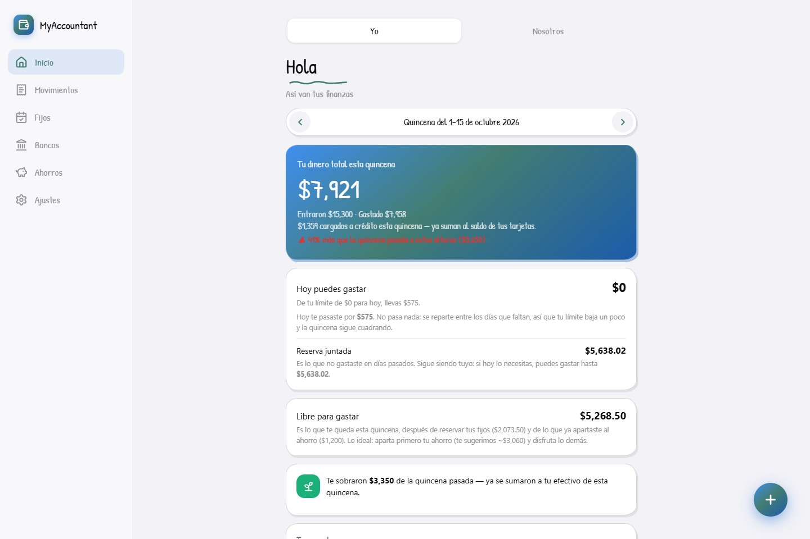

What is it?
A personal finance app: you log what you earn and what you spend, and it does the math for you. It runs in the browser, installs on your phone and is also packaged as an Android app.
MyAccountant is a personal accountant on your phone. It is a PWA (an app you install from the browser that works like a phone app) that organizes your money by pay period, splits it into needs, wants and savings envelopes, and tells you how much you can spend today. To make saving feel good, your savings goals unlock 3D pets that grow and need care.
Published personal project · the demo uses fictional data and does not connect to real accounts.

A personal finance app: you log what you earn and what you spend, and it does the math for you. It runs in the browser, installs on your phone and is also packaged as an Android app.
Most of us know how much we get paid, but not how much is left halfway to the next payday. Bills, credit cards and installment purchases get lost in scattered notes, and savings become “whatever is left”.
It splits each paycheck into envelopes, sets bills aside before they are forgotten and turns what remains into a daily limit. Spend less one day and the difference goes into a reserve; overspend and the limit for the remaining days adjusts on its own.
In Settings you enter how much you earn and how often you get paid: weekly, twice a month or monthly. The 50/30/20 rule is the default and can be changed.
The + button records expenses and income in seconds. With automatic logging, purchases land on their own in a “To confirm” inbox.
Home shows what is left, today’s limit, your envelopes, charts and tips from the accountant.
Reaching savings goals lets you adopt 3D pets, and savings earn coins to buy them accessories.
Each screen answers one concrete question: how much do I have, how much do I owe and how much can I spend.
Money is organized by the period you get paid in. Each income is split into needs, wants and savings, and the app tells the cash in your wallet apart from the money sitting in your accounts.
Rent, power, internet and subscriptions with their due day. Marking them as paid records the expense, and interest-free installment purchases keep count of the payments left.
Balances per account, cash withdrawals, card payments and debts, without counting the same money twice.
What is left after bills and savings is spread across the days until the next payday. What you do not spend does not raise tomorrow’s limit: it goes into a separate reserve.
An iPhone Shortcut, or forwarding bank notifications on Android, sends each purchase to “To confirm”. The app suggests a category and account and warns you if it looks like you already logged it.
A shared household with pots, shared bills and joint goals. Personal data is never shared: only what each person chooses.
Three-dimensional (3D) pets you adopt by reaching savings goals. They grow over the days and you look after them like a virtual pet: food, baths, games and an accessory shop. A streak counts the days in a row you log something.
Push notifications (alerts that arrive even when the app is closed) before your cards’ statement or due date and before your bills.
Export all your data to an .xlsx file, one sheet per data type, so you always have a copy outside the cloud.
One interface codebase for the web, Android and iPhone.
The interface is built with React (a library for building screens out of components) and bundled with Vite, which produces small, fast-loading files.
Firebase, Google’s cloud platform, provides sign-in (Authentication), the database (Firestore), hosting and Cloud Functions: functions that run in the cloud without a server of your own.
It installs from the browser as a PWA. Capacitor (a tool that wraps a web app inside a native app) also produces the Android version, and the iPhone build is compiled with Xcode.
A daily function sends statement and due-date reminders, and another one receives transactions from automatic logging. The reminder function is capped at one instance so it can never run in a loop.
The pets are rendered with Three.js and React Three Fiber (3D graphics in the browser). Models are cached the first time and then display offline.
A custom language engine switches the whole app between Spanish and English. The first time it follows the phone’s language and then remembers it on each device.
The database keeps a persistent local copy in IndexedDB (the browser’s built-in database). What you log without signal shows up instantly and is uploaded when the connection returns.
The service worker is the part that stores the app on the phone so it opens without internet. This one is hand-written, not generated, so it can receive push notifications in the background.
Firestore security rules let each user read and write only their own data, and they also check what is written: types, ranges, allowed fields and date formats. Everything else is denied.
App Check, with reCAPTCHA Enterprise, verifies that requests come from the real app and not from a script, which also prevents costs from fake traffic.
A local lock with Face ID, Touch ID or fingerprint uses WebAuthn (the browser standard for biometric sign-in). Someone who picks up your unlocked phone still cannot see your finances.
The Excel library, which is heavy, is only downloaded when someone exports. Most visits never need it.
Open the real app and create your account, or walk through the demo with fictional data and no sign-up.